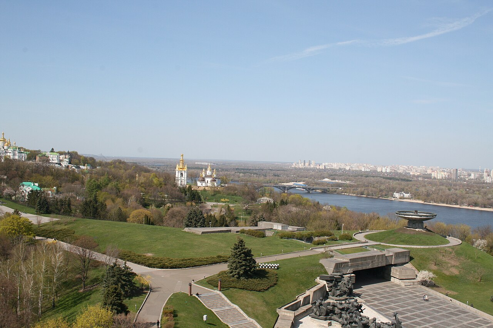

Київ

Коротка характеристика
Київ — столиця і найбільше місто України, розташоване на обох берегах Дніпра. Це одне з найстаріших міст Східної Європи: колись він був центром Київської Русі. Сьогодні Київ — головний політичний, культурний і науковий центр країни.
Чому я обрав це місто
Київ — серце України. Тут поруч стоять тисячолітні собори і сучасні квартали, а з дніпровських схилів відкриваються одні з найкращих краєвидів країни.
Цікаві факти
- Традиційною датою заснування Києва вважають 482 рік.
- Софійський собор і Києво-Печерська лавра внесені до Списку всесвітньої спадщини ЮНЕСКО.
- Станція метро «Арсенальна» — одна з найглибших станцій метро у світі.
- Києво-Печерську лавру заснували в 1051 році.
Визначні місця
- Києво-Печерська лавра
- Софійський собор
- Золоті ворота
- Михайлівський золотоверхий монастир
- Андріївський узвіз
- Хрещатик і Майдан Незалежності
Моя оцінка
10 з 10